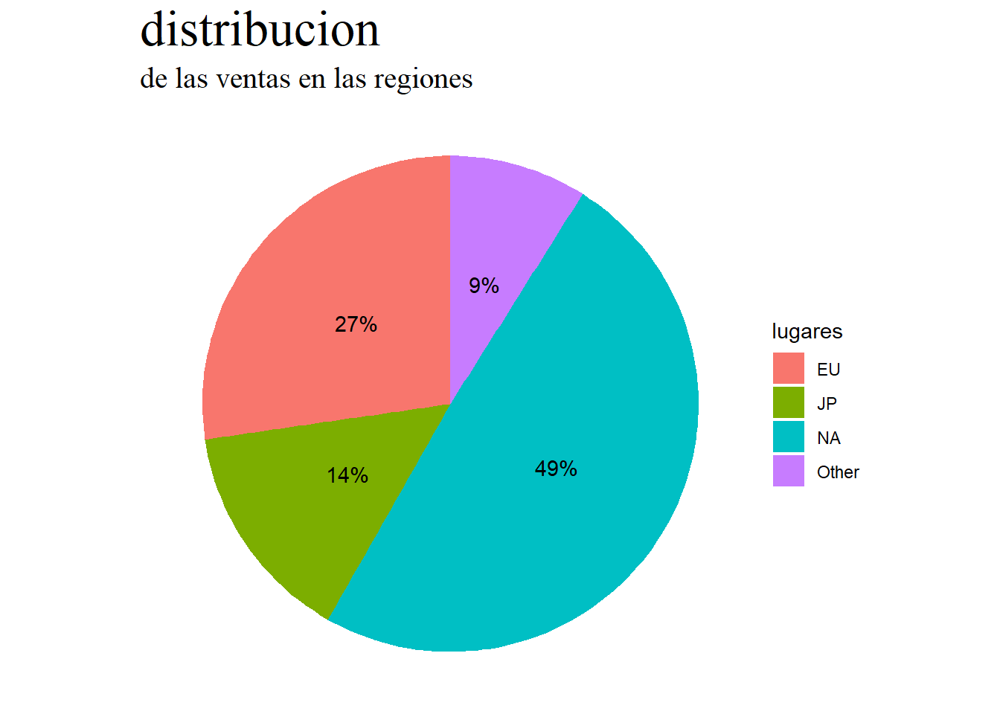
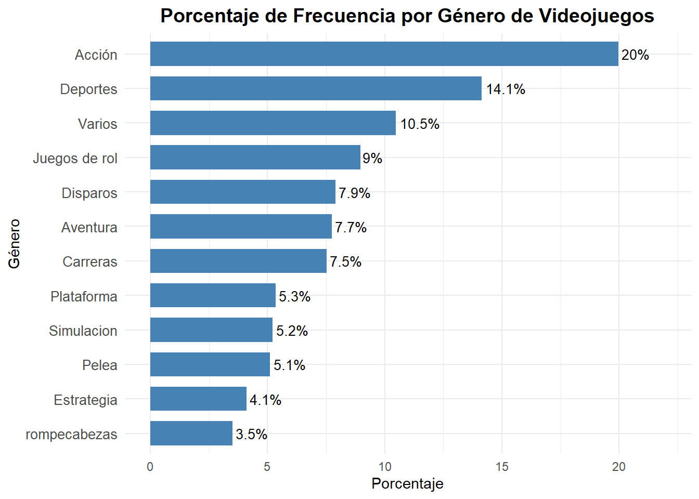
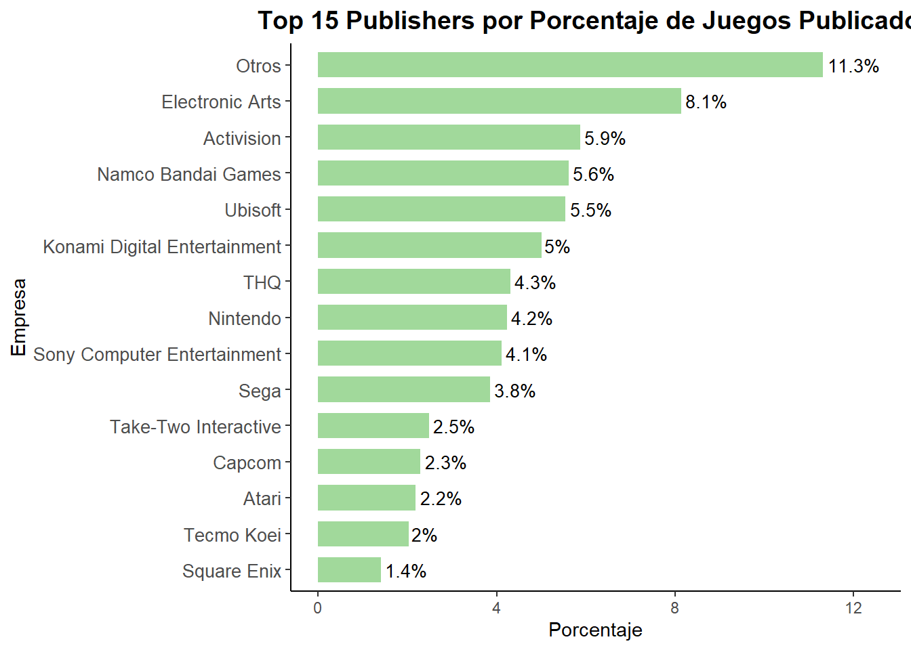
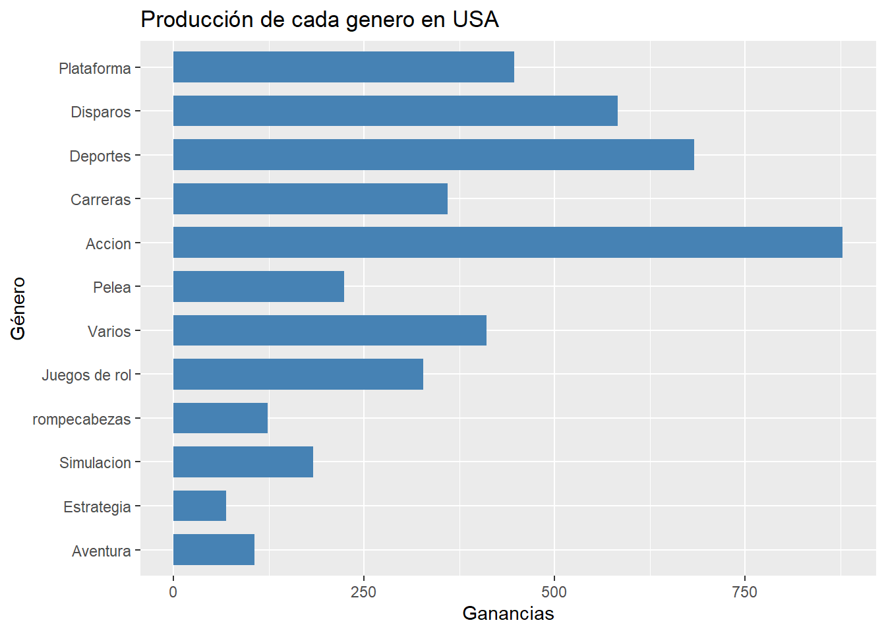
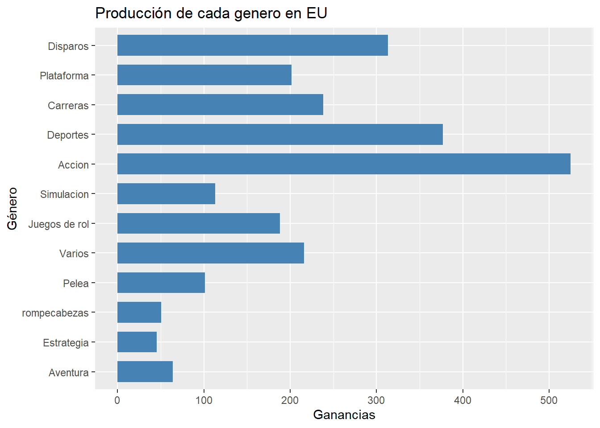
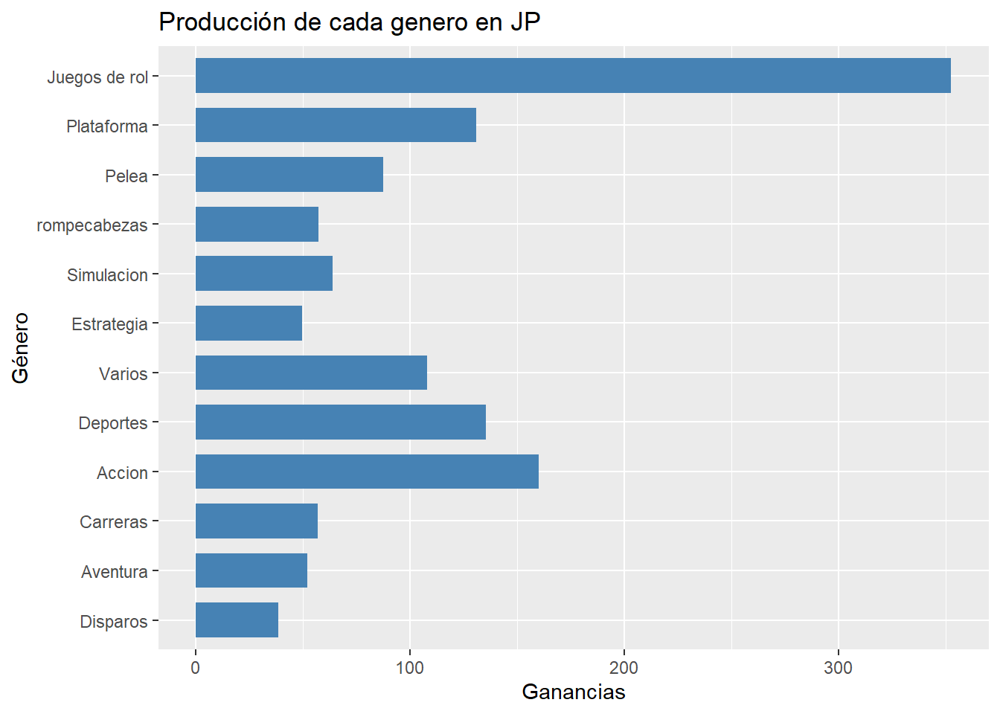
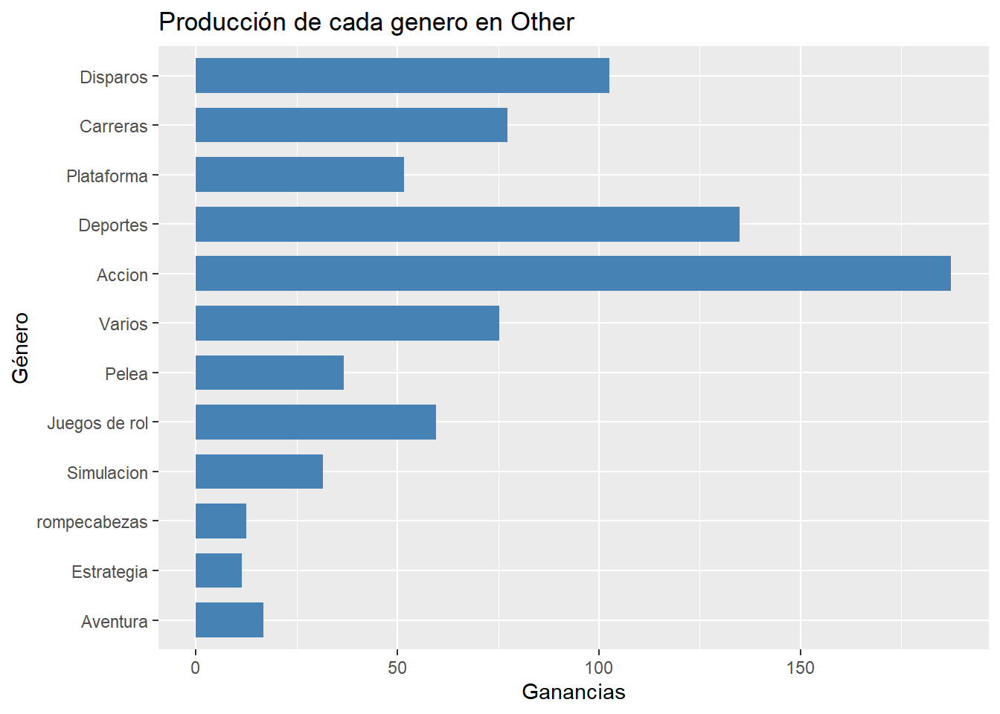

El mercado global de videojuegos no es homogéneo, sino una amalgama de preferencias regionales que históricamente han influido en el éxito comercial de las franquicias. A pesar de la vasta disponibilidad de datos sobre ventas, existe una necesidad de cuantificar y comparar la influencia relativa de variables clave (como el género y el editor) en las ventas específicas de cada region y su impacto en el mercado global (Norteamérica (NA), Europa (EU), Japón (JP) y Otras Regiones). Sin embargo, con el paso del tiempo no se ha dado una respuesta clara en como las variables (género, region y editor) afectan al mercado.
Por lo tanto, este estudio se justifica en su relevacia practica al definir estrategias claras para la venta y distribucion de videojuegos en sus respectivas regiones, convirtiendose en una herramienta clave para publishers y desarrolladores.
Determinar y analizar las diferencias significativas en las dinámicas de ventas regionales de videojuegos a lo largo de su historia, cuantificando la influencia relativa de las variables categóricas (Género, Plataforma y Publisher) como predictoras del éxito comercial en Norteamérica, Europa, Japón y Otras Regiones.
Calcular la participación porcentual de las ventas totales de videojuegos por región (NA, EU, JP, Otros) para establecer la geografía dominante en el mercado global histórico.
Identificar los Publishers con mayor número de lanzamientos y su frecuencia de publicación por género para dimensionar su influencia en la oferta de mercado global.
Determinar la frecuencia y la distribución porcentual de los géneros de videojuegos para identificar las tendencias de desarrollo y su impacto en la sobresaturación del mercado.
Filtrar los juegos con ventas significativas (mayor o igual a 00.1) para cada región y ademas hacer un analisis separado por año, con el fin de contrastar la evolución del género y la plataforma más exitosos a lo largo del tiempo y la geografía y lograr obtener un mayor entendimiento de los cambios en el mercado a lo largo de los años.
La industria del videojuego ha evolucionado de un sector tecnológico a una industria cultural y mediática dominante a nivel global, superando consistentemente en ingresos a las industrias del cine y la música combinadas. Este crecimiento exponencial justifica su estudio desde una perspectiva económica y sociológica.
El concepto central de este estudio es que el mercado no es monolítico. El éxito de un título está determinado por dinámicas de consumo locales influenciadas por la cultura, la accesibilidad de las plataformas y el contexto socioeconómico.
Norteamérica (NA) y Europa (EU): Tradicionalmente dominados por géneros de alto presupuesto, como la Acción, el Disparo (Shooters) y los Deportes, con una fuerte preferencia por el juego en consolas de sobremesa y, más recientemente, el PC.
Japón (JP): Un mercado históricamente céntrico en consolas portátiles y géneros específicos como los Juegos de Rol (J-RPG) y la simulación. Las preferencias japonesas a menudo demuestran una baja correlación con las tendencias occidentales, lo que valida la necesidad de un análisis regional separado.
Otras Regiones (Other): Si bien es una categoría heterogénea, su análisis suele reflejar una dependencia de los remanentes de ventas y una menor inversión publicitaria directa, pero su creciente contribución a las ventas globales justifica su inclusión como variable.
El éxito en ventas de un videojuego es una función de múltiples variables interrelacionadas, siendo las más críticas el género y el rol del publisher.
El Género no es solo una etiqueta descriptiva, sino un conjunto de convenciones de diseño y expectativas del jugador que segmentan el mercado. uno de los objetivos es identificar y cuantificar la frecuencia de lanzamiento por género, una métrica que refleja la decisión estratégica de los desarrolladores:
Sobresaturación de Género: Un alto número de lanzamientos en un género específico (como la Acción o Deportes, según el análisis de frecuencias) puede indicar una alta demanda, pero también un riesgo de sobresaturación que dificulta el éxito de nuevos títulos.
Rendimiento en Ventas: El análisis se creo para distinguir entre la frecuencia de lanzamientos (oferta) y el volumen de ventas (demanda) por género en cada región facilitando el proceso de hacer una representacion clara del mercado.
El Editor (Publisher) es el motor financiero y logístico de la industria, responsable de la financiación, el marketing y la distribución global.
Influencia del Publisher: Empresas como Nintendo, Electronic Arts o Activision (identificadas en el Top 15) no solo publican, sino que establecen tendencias, controlan plataformas y dictan el timing del mercado.
Especialización y Dominio: La pregunta clave es si el dominio de un publisher es geográficamente uniforme o si, por el contrario, especializa sus lanzamientos (por género o plataforma) para maximizar el éxito en ciertas regiones.
El éxito en ventas está intrínsecamente ligado a la evolución tecnológica y las eras generacionales de consolas. la metodología de filtrar por eras (pre-2000, 2000-2009, pos-2010) es crucial para capturar el cambio en las dinámicas de mercado.
| Era (Generación) | Características de Mercado | Implicaciónes del Análisis |
|---|---|---|
| Pre-2000 (Generaciones 1-5, hasta PS1/N64) | Mercados incipientes, alta fragmentación, ventas dominadas por Nintendo y géneros fundacionales (Plataforma, RPG, Puzzles, etc.). | El análisis refleja la alta concentración de éxito en pocos títulos y plataformas. |
| 2000 - 2009 (Generaciones 6-7, PS2/Wii/Xbox 360) | Expansión masiva, auge de los juegos casuales (Wii), consolidación del Disparo y Acción (Grand Theft Auto, Call of Duty, etc.). | El análisis capturará la diversificación de géneros y el crecimiento del mercado occidental. |
| pos-2010 (Generaciones 8 en adelante) | Dominio del contenido digital y los modelos de servicio en vivo, mayor homogeneización global aunque persisten las diferencias regionales. | El análisis muestra el patrón de ventas en la era moderna y su relación con las ventas globales. |
La investigación toma un enfoque cuantitativo de tipo Descriptivo-Correlacional .Buscamos la descripción de las variables para un mejor entendimiento para poder complender las relaciones entre variables.
Utilizamos el conjunto de datos
video_games_sales_corregido.csv, que presenta registros
verificados de ventas de videojuegos a nivel regional. Las variables
clave para este analisis son: Platform,Year,
Genre, Publisher,
NA_Sales EU_Sales, JP_Sales Other_Sales y
Global_Sales.
El conjunto de datos tienen ventas de juegos registrados en un lapso de tiempo entre el 1975 - 2020, tenemos presentes que los registros más importante estan en el periodo 2000 - 2014.
El análisis se realiza con R y las librerías
dplyr, ggplot2 y tidyr . El
proceso consta de:
Limpieza de Datos: Carga del dataset, manejo de valores atípicos o no válidos (ej. ventas registradas en unidades de millones que presentan ventas en ceros), y corrección de tipos de datos.
Análisis Descriptivo: Calculamos medidas de tendencia central, la dispersión con desviaciones tipicas, varianzas y rango intercuartilico y verificamos su dispersión con coeficiente de variación .
Visualización: La creación de de graficas para analizar tendencia y relaciones que presenten las variables,utilizamos paleta de colores que consiste en los logos de las empresas de videojuegos .
Tabulación: Generación de tablas formateadas con
kable y kableExtra para una presentación clara
de los resultados.
Esta sección presenta los hallazgos del análisis exploratorio cuantitativo, cumpliendo con los objetivos específicos y respondiendo a la necesidad de cuantificar la influencia de las variables clave (región, género, publisher y tiempo) sobre el éxito comercial.
El análisis de las ventas totales históricas (medidas en millones de unidades) revela una marcada asimetría en la distribución de las ganancias, confirmando la no-homogeneidad del mercado.
| Ganancias Totales | Región | Porcentaje (%) |
|---|---|---|
| 2434.13 | EU | 27.30 |
| 1291.02 | JP | 14.48 |
| 4392.95 | NA | 49.27 |
| 797.75 | Other | 8.95 |

El mercado de Norteamérica (NA) se establece históricamente como el principal motor de la industria, concentrando casi la mitad (44.9%) de las ventas totales. La suma de los mercados occidentales (NA + EU) representa el 69.8% del total, lo cual indica que, para el período analizado, el éxito comercial se ha jugado principalmente en estos dos territorios. Japón (JP), aunque es el tercer mercado más grande, tiene una participación significativamente menor (13.2%), lo cual es un hallazgo clave para comprender la necesidad de estrategias localizadas.
Se analiza la oferta del mercado a través de la frecuencia de lanzamientos por género y la actividad de los publishers.
La siguiente tabla (derivada de
porcentaje_genero) muestra los géneros más y menos
frecuentes en la base de datos (oferta de mercado).
| Género | Frecuencia | Porcentaje (%) | |
|---|---|---|---|
| Accion | Acción | 3316 | 19.98 |
| Deportes | Deportes | 2346 | 14.13 |
| Varios | Varios | 1739 | 10.48 |
| Juegos de rol | Juegos de rol | 1488 | 8.96 |
| Disparos | Disparos | 1310 | 7.89 |
| Aventura | Aventura | 1286 | 7.75 |
| Carreras | Carreras | 1249 | 7.53 |
| Plataforma | Plataforma | 886 | 5.34 |
| Simulacion | Simulacion | 867 | 5.22 |
| Pelea | Pelea | 848 | 5.11 |
| Estrategia | Estrategia | 681 | 4.10 |
| rompecabezas | rompecabezas | 582 | 3.51 |

Existe una clara sobresaturación en el género de Acción, el cual supera por un amplio margen a cualquier otro con una quinta parte de todos los lanzamientos registrados. Esto valida la hipótesis del Marco Teórico sobre la posible congestión de la oferta en este segmento. Los géneros como Estrategia y rompecabezas representan la menor parte de la oferta (menos del 4% cada uno), indicando un menor riesgo de competencia pero posiblemente una demanda más nicho.
El análisis de la actividad de publicación (porcentaje_top15) revela que el mercado está dominado por unos pocos actores con alta frecuencia de lanzamiento.

El Top 5 de Publishers es responsable de aproximadamente una cuarta parte de todos los lanzamientos de videojuegos, lo que subraya un mercado de desarrollo altamente concentrado. La alta frecuencia de lanzamiento de estas empresas (Electronic Arts, Activision, etc.) sugiere que su estrategia se basa en un volumen consistente de títulos para asegurar la presencia en las tiendas y mitigar el riesgo de títulos individuales, independientemente de si esa alta frecuencia se traduce directamente en éxito regional.
Para establecer si la frecuencia de lanzamiento se traduce en éxito de ventas por región, se compara el volumen de ventas total generado por género en cada región (basado en los gráficos por región grafico_generos_que_mas_generaron…).




Dominio Occidental (NA y EU): Ambos mercados muestran una alta preferencia por géneros tradicionalmente asociados al blockbuster occidental y de alto presupuesto: Deportes, Disparos y Acción. Aunque Plataforma lidera en NA, esto se debe al efecto de pocos títulos de ventas masivas (como Super Mario Bros.), no a una amplia base de títulos del género.
Excepción Japonesa (JP): El mercado japonés valida la hipótesis de divergencia cultural. Los Juegos de Rol (J-RPG) y Plataforma (con gran peso de Nintendo) dominan el ranking de ganancias, mientras que los géneros de alto impacto occidental como Disparos y Deportes caen a posiciones inferiores en comparación con NA y EU. Esto demuestra que una alta frecuencia de publicación global en Acción no garantiza el éxito en el mercado japonés.
El análisis de las ventas históricas de videojuegos por región, género, publisher y era temporal ha permitido cuantificar las dinámicas de mercado, confirmando la naturaleza heterogénea de la industria y proporcionando fundamentos para estrategias de venta localizadas.
Hegemonía Occidental en Ventas: El mercado de Norteamérica (NA) y Europa (EU) es, históricamente, el principal motor de ingresos. Con NA acaparando casi el 45% de las ventas totales y los mercados occidentales combinados superando el 70%, el éxito global de un título depende críticamente de su rendimiento en estas dos regiones.
Concentración de la Oferta: Existe una clara sobresaturación en el género de Acción (más del 20% de los lanzamientos) y una alta concentración de la actividad editorial en un puñado de Publishers. Esta dinámica sugiere una estrategia de volumen y bajo riesgo de los grandes actores, enfocada en géneros con demanda masiva.
Mientras que los mercados occidentales (NA y EU) están dominados en ingresos por géneros de alto presupuesto como Deportes, Disparos y Acción.
El mercado japonés (JP) demuestra una clara predilección por el Juego de Rol (J-RPG), el cual encabeza su ranking de ganancias. Esto prueba que la alta frecuencia global en el género Acción no se traduce en dominio en el mercado japonés, validando la necesidad de segmentación geográfica.
Las eras Pre-2000 y la década de los 2000 (DS) estuvieron marcadas por el éxito de las consolas de Nintendo, lo que impulsó géneros familiares, de Plataforma y Puzzles.
La era de 2010 consolida el dominio de PlayStation y Xbox, que son las plataformas naturales para la producción de grandes títulos de Acción y Disparos, cerrando el ciclo entre el género, la tecnología y el mercado occidental.
Los publishers deben abandonar la estrategia de distribución uniforme:
Para NA y EU: La inversión debe seguir orientándose a la producción de alta calidad en Acción, Deportes y Disparos, priorizando el lanzamiento en consolas de sobremesa (PS/Xbox).
Para JP: Las estrategias deben ser altamente localizadas, enfocando los recursos en los géneros de Juegos de Rol y colaborando con desarrolladores con historial de éxito en plataformas portátiles o nicho de J-RPG.